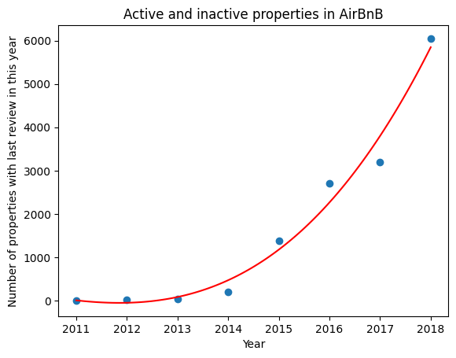
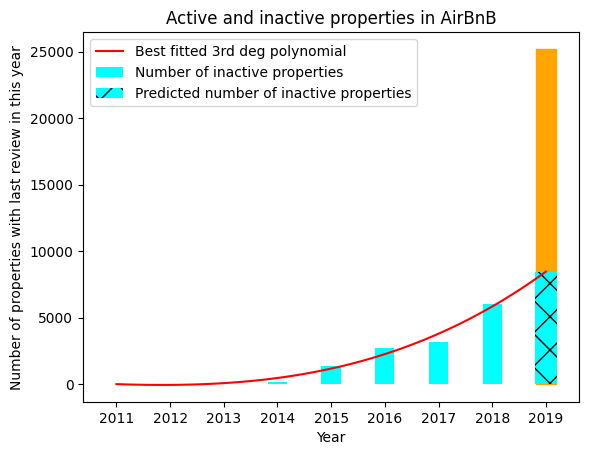

Unit 4. Group project on ML model building

In Unit 4 we were tasked with the analysis of the dataset of New York City's AirB'n'B properties listed from 2011 to 2019. The groups of students first had to propose an appropriate research issue, and then profoundly examine it and deliver well-described results. My role in the group of 5 was to propose our initial approach to machine learning model and to perform needed preliminar calulations in order to check the plausability of the taken path. (I based on a few initial lines of code provided by other team member.)
After careful consideration, we decided to reconstruct from the very limited, aggregated data from 2023 - the number of active and inactive properties from each subsequent year from 2011-2019 timeframe. The task was outstandingly difficult, for the provided data did not encompass such direct indication or parameters.
See the code with commentary and outcomes.
As the basic set was limited only to 16 columns, with no direct data on the subject, we had to apply deeper feature engineering to derive needed information. This can be deduced using "last_review" - returning a time of when the property was review by the guest last time. The assumption applied here, straightforwardly obvious, is that when the property is not reviewed for a year, that means it no longer in use. Therefore, "last_review" limited only to the year, directly conveyed the information of the last denoted year of activity (excluding 2019). Having this information drawn, we could see the rising trend of inactive properties in the set. However, 2019 towered above the preceding values, because it stood for both active and inactive (of unknown proportion) properties as the last recorded year. Briefly, the task might be divided into 3 steps: 1. Predicting the number of inactive properties in 2019 basing on the trend from 2011-2018 2. Calculating the 'inactives to all properties' ratio in 2019 3. Propagating back the obtained ratio from pt.2 for years 2011-2018 in order to get the number of total listed properties Note: step 3 requires another assumption: that the inactives to all properties' ratio in constant over time and applyable to years 2011-2018. For several following reasons we find this assumption plausible for the sake of this analysis: a) we took advantage of the given timeframe: relative stable economy, no global war or turmoils, real estate market recovered after 2008 crisis, yet not affected by upcoming COVID-19 effect; b) the analysis is based on a very limited scope, and our goal is to make use of the data as it is -- with the uncertainty of the obtained outcomes properly pointed out; presumably the management of AirBnB after fiding the results promising, could provide a deeper dataset that will not require applying these assumptions.
Step 1. Predicting the number of inactive properties in 2019 basing on the trend from 2011-2018
In order to create and adjust optimal curve following given data points. Fortunately, after visual examination most likely it is a low-degree polynomial. We decided to use a 3rd degree polynomial as a candidate function and use least square method to callibrate its parameters. Our model function: 3rd degree polynomial f(x)=ax^3+bx^2+cx+d. After finding the most fitting model, we draw the curve and the historical points to double-check whether it visually follows them.
Function equation: f(year) = 10.7 *x^3+ 62.74 *x^2+ -129.97 *x+ 10.71
Step 2.Calculating the 'inactives to all properties' ratio in 2019
Prediction for 2019: 8465.5Inactive to active properties ratio: 0.34
Covariance matrix or errors:
[[ 300.53575774 -3155.62498626 8264.72923972 -3155.61636831]
[ -3155.62498626 34196.6678422 -94217.9191353 40572.24397097]
[ 8264.72923972 -94217.9191353 283598.32736972 -153723.91843695]
[ -3155.61636831 40572.24397097 -153723.91843695 159584.56180573]]
And hence, we draw the results of predicted value of inactive properties in 2019:
